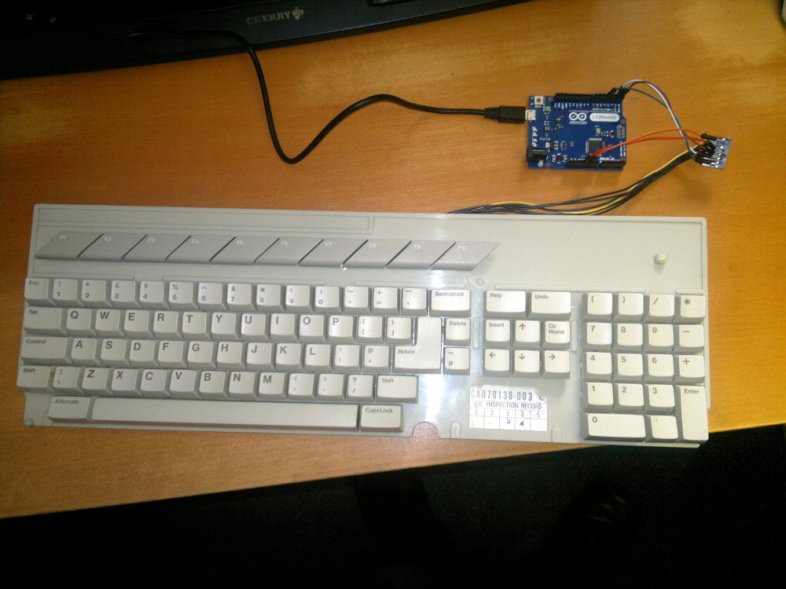

Atari Pi Project: Components | Arduino Wiring | Arduino Coding | Pi Mounting | Pi Software | Final Assembly
Wiring the Atari ST Keyboard to the Arduino
The 8-pin Atari ST keyboard connector needs to be connected to the Arduino as follows:
1 GND -> Connect to Arduino GND pin
2 BLANKED OFF -> No connection
3 LED -> Not connected (as not implemented)
4 5V -> Connect to Arduino 5V pin
5 Rx -> Connect to Arduino RX1 pin
6 Tx -> Connect to Arduino TX1 pin
7 RESET -> Connect to Arduino Pin 4 (configurable in software)
8 GND -> Not connected
You can identify which way round the Atari connector should be as pin 2 on the connector is blanked off. I used some standard solid core inter-connect wire that could be jammed into the Atari connector to make a good connection.


Return to home page.